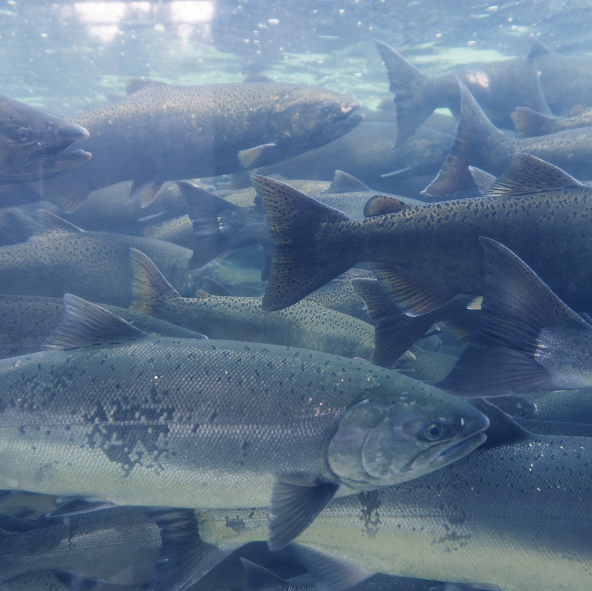

Le réchauffement des courants océaniques perturbe les trajectoires
migratoires des saumons, rendant leur déplacement plus difficile.
Cela affecte leurs habitats de reproduction, réduisant ainsi leurs
chances de survie et leur reproduction.
Il est principalement causé par
l'augmentation des températures mondiales dues au changement climatique.
Ce phénomène perturbe les écosystèmes marins et modifie les schémas de
migration des espèces. À l'échelle mondiale,
cela entraîne une diminution de la biodiversité marine, affecte les
pêcheries et aggrave les conditions climatiques extrêmes, avec des
conséquences graves pour les écosystèmes et les économies humaines.